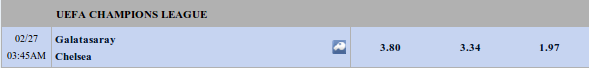
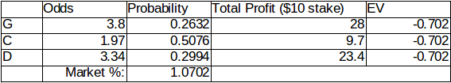

We begin by interpreting the Expected Value (EV) in betting to avoid confusion and misconception. EV is the amount of money that you will win or lose, on the average, when you bet on a certain result.
The term on the average is very important as the EV is the amount of money you can gain or lose if you bet on a certain result in the long run. If for example, you have an expected value of -$0.30, you are expected to lose $0.30 on each bet you are making. This value will be true if you bet many times, and the accuracy depends on the number of times you will be betting. From the law of large numbers, the more you bet, the more accurate the EV can be.
In this entry, I will try to calculate the EV of lotto and let's see if playing it is worth the money.
Calculating EV
We calculate EV using the following formula:
EV = PWin × Profit per Bet − PLose × Loss per Betwhere PWin is the probability of winning and PLose is the probability of losing the bet. We get the PWin in sports betting by getting the inverse of the Euro Odds. The Profit per bet is calculated as follows:
Profit per Bet = Stake × Bet − BetThe PLose is determined by getting the sum of the probability of all other scenarios. And lastly, the Loss per bet is the stake you will be giving.
EV of Lotto
In calculating the EV of lotto 6/42, we must first know how it works. A player will select a combination of 6 numbers from 1 to 42. The number combination of the player should match the number combination drawn via random selection. We can get the probability of getting a right combination of 6 numbers using this formula [1]:
n! / [k! (n-k)!] = 49! / [6! (49-6)!] = 13,983,816Using the formula of EV above:
EV = (1/13,983,816) × Php 76,762,788 − (1 − 1/13,983,816) × Php 20 = −P14.51Php 76,762,808.00 [2] is the jackpot as of 23-Feb-14. Therefore, if you place many bets on the Philippine lotto 6/49, you will lose Php 14.51 on each bet on the average. That is a big waste of money! Therefore, betting on lotto is actually a bad idea if you want to win some money. Only when the EV is positive is it logical to place bets on it.
To make the EV positive, you have to wait for the jackpot to be around Php 280 Million (or Php 260 Million if you consider other consolation prizes [3])—which never happened. The largest was in 2008 where the prize was Php 249 million [4]. And of course, this does not include the fact that you may share the jackpot prize with other people!
The point is, planning to get rich using the lottery isn't really a great idea. Even though the EV is positive, you need to spend lots and lots of money to cover all bets and may end up losing when you share the prize with others and of course, there is the nifty tax that will surely eat a great percentage of your winnings.
However, if you see your Php 20.00 as your daily giving to charity, or buying tickets gives you the certain hope you need that all your money problems will disappear one day, to keep you sane from all the money problems you are experiencing, then I think all my logical explanations won't matter.
Sports Betting and EV
Calculating the EV in sports betting is very important as this gives the bettor the “value” of their bet. The most positive (or least negative) EV gives the best value for each bet. We calculate the EV of a match from IBC Bet:

The odds of Galatasaray (G) winning is 3.80, Chelsea (C) winning 1.97 and the match being a draw (D) is 3.34. We have calculated the EV to be -$0.70 (see Table 1). The probability of the event happening is just the inverse of the odds. The total profit is just the total winnings, or the odds multiplied by the stake, minus the stake itself. The EV is calculated using the formula given.

Table 1. The EV calculation of the match above.
As we can see, it is still negative. We may relate the value of the EV with the market percentage, which is 107.02%. This means on the average, a bettor loses $0.70 per bet. All sports betting companies give a negative EV because if they don't, in the long run they will lose money.
How to use EV in sports betting
If you will just lose money in sports betting, is there a guarantee that I can earn in this field? At a certain point, Yes! It's because sports betting companies don't always agree on the odds of a certain bet. In a future article on arbitrage betting, we will discuss how you can take advantage of the differences in the given odds of a certain event from different companies, resulting in positive EV.
Also, unlike lotto and other betting which relies only on pure luck—if you can actually predict the outcome of a certain sporting event based on statistics and knowledge about the sport and on sports betting itself, you can outsmart the bookmaker and make lots of money!
Again, the heart of sports betting is knowing the risks and the value of each bet. Knowing the true value of each bet made is one of the keys to winning.
“Price is what you pay. Value is what you get.” — Warren Buffett
References:
[1] http://en.wikipedia.org/wiki/Combination
[2] http://pwedeh.com/category/superlotto-649-pcso-results/page/2
[3] http://nontrivialpursuit.blogspot.com/2010/02/so-when-does-it-make-sense-to-play.html
[4] http://newsinfo.inquirer.net/breakingnews/nation/view/20080331-127383/P249-M-lotto-winner-from-Luzon-says-PCSO